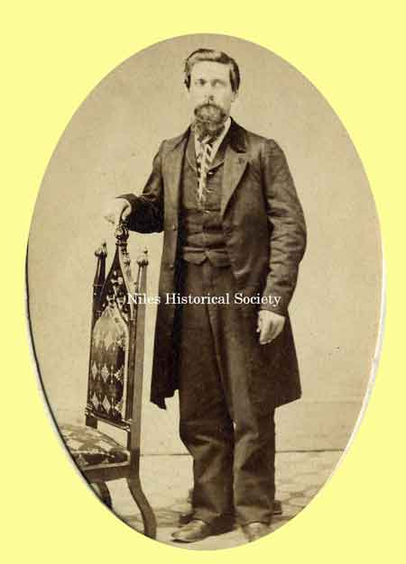
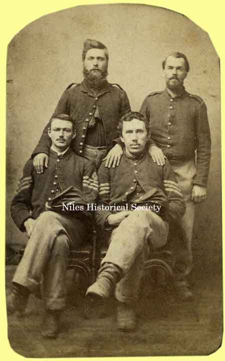

Ward-Thomas Museum


Hiram Ohl Residence
Ward — Thomas
Museum
Home of the Niles Historical Society
503 Brown Street Niles, Ohio 44446
Click here to become a Niles Historical Society Member or to renew your membership
Click on any photograph to view a larger image, click on image again to zoom into photograph.
Drawing of the Hiram Ohl residence from the 1874 Everts Trumbull County |
Hiram Ohl Residence Hiram Ohl was a master builder and cabinetmaker who put all his skills to use in building a ‘Gingerbread house’ at 437 Robbins Avenue. Lumber was cut in Canfield and its beautiful cornices and spiral staircase made the home a showplace until it was dismantled in 1961 and its beautiful antique furnishings were sold at auction. Hiram Ohl was a fascinating person too. His geneology goes back to Johannes Heinrich vod der Ohles, born in 1704 in Switzerland. Johannes moved to America and died in 1735 in Northampton County, Pennsylvania. Hiram Ohl married Matilda Cleveland(Cleaveland) in 1865. He was the sixth generation of the family in America and the son of John Henry Ohl, a pioneer resident of the area for whom Ohltown was named. Hiram’s wife, Matilda was the daughter of Camden A. Cleveland(Cleaveland) and Matilda Robbins. Besides his own home, Hiram Ohl built many other
showplaces of the area. |
|
| |
||
 |
L. 1918 map showing the location of the Hiram Ohl residence at 437 Robbins Avenue. R. 1876 tax receipt for the Hiram Ohl residence
at 437 Robbins Avenue. SO3.245 |
 |
| |
||

Hiram Ohl |
Matilda Ohl |
 Hiram Ohl with a group of Civil War soldiers |
| |
||
|
Hiram Ohl |
Back row: Mr. and Mrs. William Brown of Beaver Falls, PA. Front row: the boy is Carl Cleveland Ohl, Howard Ohl and Hiram Ohl (the old man). Standing in front of the statue of McKinley in the rotunda of the Memorial. PO1.1084 |
|
|
|
||